At the center of the Middle East, on the shores of the Mediterranean in the Levant (the area bordering the eastern Mediterranean Sea), lies the country of Israel. Israel is bordered by Lebanon to the north, Syria and Jordan to the east, and Egypt to the south. Covering an area of only 8,522 square miles, Israel is smaller than the US state of Massachusetts and only one-fifth the size of the state of Kentucky. The coastal region, which has a moderate type C climate, receives more rainfall than the dry interior and the Negev Desert in the south, both of which have arid type B climates. The Sea of Galilee, also called Lake Kinneret or the Sea of Tiberias, is a major fresh water supply. The Jordan River flows from the Sea of Galilee to the Dead Sea. The Dead Sea is 1,300 feet below sea level, so it has no outlet. Over time, salts and minerals have built up, creating an environment that does not support fish or aquatic life. South of the Negev Desert is the Gulf of Aqaba, which provides access to the Red Sea for both Israel and Jordan. Israel does not have substantial oil resources but has a potential for natural gas in offshore locations along the Mediterranean Sea.
Though most of the population in the Middle East is Islamic, there are exceptions, such as in Israel, which has a Jewish majority. Israel was established in 1948. Before that time, the country was called Palestine. The region went through a series of tumultuous transitions before it became the nation of Israel. Before 1948, most people in Palestine were called PalestiniansPeople who lived in the region of Palestine before Israel was recognized as a nation in 1948. and consisted primarily of Arab Muslims, Samaritans, Bedouins, and Jews. Most Jewish people were dispersed throughout the world, with the majority in Europe and the United States.
Palestine was a part of the Turkish Ottoman Empire before the end of World War I. Britain defeated Turkish forces in 1917 and occupied Palestine for the remainder of the war. The British government was granted control of Palestine by the mandate of the Versailles Peace Conference in 1919 at the end of World War I. Britain supported the Balfour Declaration of 1917, which favored a Jewish homeland. The British Mandate included Palestine and Transjordan, the area east of the Jordan River, which includes the current country of Jordan.
Between 1922 and 1947, during British control, most of the population of Palestine was ethnically Arab and followed Islam. In 1922, Jews made up less than 20 percent of the population. The Jewish settlements were mainly along the west coast and in the north. Jewish people from other countries—including primarily Jews escaping German oppression in the 1930s—migrated to the Israeli settlements. Palestine was turned over to the control of the newly created United Nations (UN) in 1945 at the end of World War II.
The United Nations Special Committee on Palestine (UNSCOP) was created by the UN in 1947. To address the Palestine region, UNSCOP recommended that Palestine be divided into an Arab state, a Jewish state, and an international territory that included Jerusalem. Palestine was divided by the UN. About 44 percent of the territory was allocated to the Palestinians, who consisted of about 67 percent of the population, which was mainly Arab. Approximately 56 percent of the territory was allocated to the minority Jewish population, who only consisted of about 33 percent of the population. The country of Jordan was created out of the region east of the Jordan River and the Dead Sea. The city of Jerusalem was to remain under the administrative control of the UN as an international city. The Jewish State of Israel was officially recognized in 1948. The Palestinians, who were a majority of Israel’s total population at the time and who owned about 90 percent of the land, denounced the agreement as unacceptable.“Division of Palestine by United Nations,” Knowledgerush, http://www.knowledgerush.com/kr/encyclopedia/Division_of_Palestine_by_United_Nations. One of the consequences of the territorial partition was that thousands of Palestinian Arabs were forced off the land that was allocated to the Jewish state. These Palestinians became refugees in the Palestinian portion or in neighboring countries.
Palestine’s Arab neighbors—Syria, Saudi Arabia, Lebanon, Iraq, and Egypt—sided with the Arab Palestinians and declared war on Israel. The war did not end favorably for the Arabs. With support and aid from Britain and the United States, the Jewish State of Israel defeated the attacking Arab armies and took control of a larger portion of the land, including some of the land designated by the UN as a portion of the Arab half.
Figure 8.23 Satellite Image of Palestine (left); 1948 UN Division of Palestine into Half Jewish State and Half Arab State (center); Political Map of Israel in 2011(right)
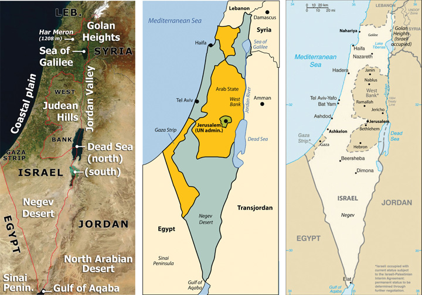Sources: Satellite image on left courtesy of NASA, http://commons.wikimedia.org/wiki/File:Southeast_mediterranean_annotated_geography.jpg. Map in the center courtesy of Kordas, http://commons.wikimedia.org/wiki/File:1947-UN-Partition-Plan-1949-Armistice-Comparison-es.svg. Map on right courtesy of CIA World Factbook.
After the Arabs lost the first war against the Jewish State of Israel, the Palestinians’ problems increased. By 1950 over 750,000 Palestinians living in the Jewish-controlled regions of Israel were forced out of their homes and into refugee camps. According to the UN in 2010, about one-third of the registered Palestine refugees, more than 1.4 million, live in fifty-eight recognized refugee camps in Jordan, Lebanon, the Syrian Arab Republic, the Gaza Strip, and the West Bank, including East Jerusalem. Jordan has the highest number of Palestinian refugees: almost two million, with more than 330,000 living in refugee camps.“Palestine Refugees,” United Nations Relief and Works Agency for Palestine Refugees, http://www.unrwa.org/etemplate.php?id=86; “Statistics,” United Nations Relief and Works Agency for Palestine Refugees, http://www.unrwa.org/etemplate.php?id=253. Jordan has allowed most of its Palestinian refugees to receive Jordanian citizenship.
By 1967, the Arab armies had regrouped and were willing to attack Israel again. The 1967 war was short lived, lasting only about a week. The Arab armies were devastated once again, and Israel gained even more territory. Israel took the Sinai Peninsula and the Gaza Strip from Egypt, the Golan Heights from Syria, and the West Bank from Jordan. The entire city of Jerusalem came under Israeli control. The 1967 war solidified the control of the region of Palestine under the Israeli government and placed Israel at greater odds with its Arab neighbors. Syria wanted Israel to return the Golan Heights, which has a strategic military advantage in overlooking northern Israel, and Egypt wanted Israel to return control of the Sinai Peninsula.
Egypt and Syria attacked Israel again on October 6, 1973, which was Yom Kippur, the most solemn holiday in the Jewish religion. The Israeli army counterattacked, driving the Syrians out and the Egyptian army and back across the Suez Canal. After a few weeks of conflict, a peace treaty was agreed upon. In 1977, Israeli president Menachem Begin and Egyptian president Anwar Sadat were invited to Camp David, Maryland, by US president Jimmy Carter. Israel and Egypt signed the Camp David AccordA 1977 peace agreement between Israel and Egypt to not go to war again., an agreement not to go to war again. Egypt agreed to officially recognize the State of Israel and to not invade Israel again. Israel agreed to return the Sinai Peninsula to Egypt; the peninsula was returned in 1982. Each participant in the accord won the Nobel Peace Prize.
Figure 8.24 The Western Wall in Jerusalem
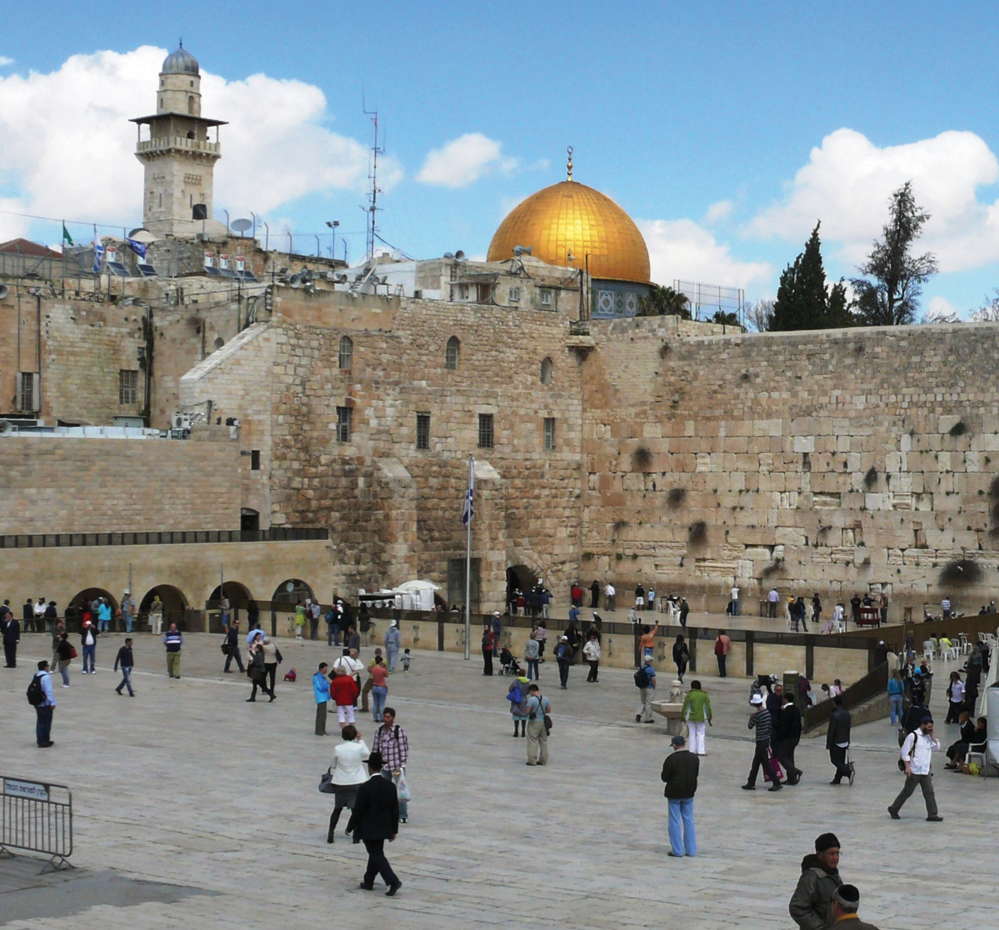A remnant of the Jewish temple built by Herod the Great and destroyed in 70 CE, the Western Wall is the most holy place for the Jewish people. The Dome of the Rock mosque in the background is the third-holiest site for Muslims.
Source: Photo by R. Berglee.
In 1980, Israel passed the Jerusalem Law, which stated that greater Jerusalem was Israeli territory and that Jerusalem was the eternal capital of the State of Israel. The UN rejected Israel’s claim on greater Jerusalem, and few if any countries have accepted it. Israel moved its capital from Tel Aviv to Jerusalem to solidify its claim on the city even though most of the world’s embassies remain in Tel Aviv. The move of the capital was designed to create a forward capital, the purpose of which is usually either to protect a nation’s territory or to spur the development of the country. In this case, it was to protect valuable territory.
Palestinians were left with only the regions of the Gaza Strip and the West Bank, which is controlled by the Israeli government and is subject to Israel’s national jurisdiction. As of 2010, about 1.5 million Palestinians live in the Gaza Strip and 2.5 million live in the West Bank. A number of cities in the West Bank and Gaza Strip have been turned over to the Palestinian Authority (PA) for self-governing. The PA was established between the Palestine Liberation Organization (PLO)Governing body that represents the Palestinians. and the Israeli government to administer internal security and civil matters. The PLO and the PA are two separate entities. The PLO is the internationally recognized governing body of the Palestinian people. It is legitimately recognized by the UN to represent the area known as Palestine in political matters. There are two main political parties within the PLO: Hamas and Fatah. The Hamas party is the strongest in the region of the Gaza Strip, and the Fatah party is more prominent in the West Bank.
The future of the West Bank and the Gaza Strip has been the focus of talks and negotiation for decades. There are various ways to approach this issue; a one-state solution and a two-state solution have been proposed. The one-state solution proposes the creation of a fully democratic state of Israel and the integration of all the people within its borders into one country. Integration of the Gaza Strip and the West Bank into the Jewish State of Israel is part of this plan; in other words, “Take the walls down and create one state.”Source: Mahmoud Masri, Nablus—West Bank 2011 (Paraphrased quote). Many Palestinians support the one-state solution, but most of the Jewish population does not. Family size is much larger in the Palestinian side, so it would be only a matter of time before the Jewish population would be a minority population and would not have full political control with a democratic government. To have the Jewish State of Israel, the Jewish population needs to keep its status as the majority.
In a two-state solution, Palestinians would have their own nation-state, which would include the Gaza Strip and the West Bank. The rest of former Palestine would be included in the Jewish State of Israel. The two-nation concept (Israel and a Palestinian state) has been proposed and supported by a number of foreign governments, including the United States. Implementation of a two-state solution is, of course, not without its own inherent problems. At the present time, the West Bank and the Gaza Strip are subjects under the Jewish State of Israel without full political or economic autonomy. The two-state solution would buy more time for the Jewish population with smaller families to retain power as a majority political voting bloc.
Parties to the negotiations have acknowledged that the most likely solution is to create a Palestinian state bordering Israel. However, it is not clear how to make this happen. Palestine is now divided between the Jewish State of Israel (with 7.3 million people) on one side and the Palestinians (with 4.0 million people) in the West Bank and the Gaza Strip on the other side. About 75 percent of Israel’s population of 7.3 million people are Jewish, and about 25 percent are Arab. Travel between Israel and the Palestinian areas is heavily restricted and tightly controlled. A high concrete and barbed wire barrier separates the two sides for much of the border. The West Bank provides fresh water used on the Israeli side for agriculture and industrial processes. The industries also employ Palestinians and support them economically.
Jewish people from various parts of the world continue to migrate to Israel, and the Israeli government continues to build housing settlements to accommodate them. Since the West Bank region is under the Israeli national jurisdiction, many of the new housing settlements have been built in the West Bank. The Palestinians who live there strongly oppose the settlements. In 1977, only about five thousand Jews lived in the West Bank settlements. As of 2010 there were more than two hundred thousand. The Palestinians argue that if they were to have their own nation-state, then the Jewish settlements would be in their country and would have to be either resettled or absorbed. Israel responds by indicating that the two-state solution is indefensible because the Jewish settlements in the West Bank cannot be protected if the West Bank is separated from Israel.
The issues in Israel are generally complicated. After a series of wars and considerable negotiations, the central problems remain: Jews and Palestinians both want the same land, both groups want Jerusalem to be their capital city, and neither group can find a compromise. Support for the Jewish State of Israel has primarily come from the United States and from Jewish groups external to Israel. There are more Jews in the United States than there are in Israel, and the US Jewish lobby is powerful. Israel has been the top recipient of US foreign aid for most of the years since 1948. Through charitable donations, US groups provide Israel additional billions of dollars annually. Foreign aid has given the Jewish population in Israel a standard of living that is higher than the standard of living of many European countries.
In the past decade, most of the PLO’s operating budget has come from external sources. Arab neighbors provide millions of dollars annually. Though Iran is not Arab, they have provided aid to the Palestinian cause in support of fellow Muslims against the Jewish State of Israel. The PLO has received the bulk of its funding from the European Union. Russia has also provided millions of dollars in aid. The United States provides millions in direct or indirect aid to the Palestinians annually.
The Gaza Strip is one of the most densely populated regions on Earth, and it is located in a desert. There are few jobs and no real methods of gaining wealth. Palestinians living in the Gaza Strip or the West Bank need to rely on outside support to survive. These are small areas with lots of people. The West Bank is only about thirty miles wide by seventy-five miles long, yet more than 2.5 million people call it home. The Gaza Strip is a desert region about six miles wide by twenty-three miles long and is home to more than 1.5 million people. In 2010, family size in the West Bank was about 3.2, and in the Gaza Strip, it was about 5.0. Unemployment rates averaged about 40 percent in the Gaza Strip and over 20 percent in the West Bank.“The World Factbook,” Central Intelligence Agency, https://www.cia.gov/library/publications/the-world-factbook Underemployment is also a major issue in that there may be few employment opportunities for professionals with specialized skills or a university degree in a specific field of interest.
Figure 8.25 A Street in the West Bank City of Nablus
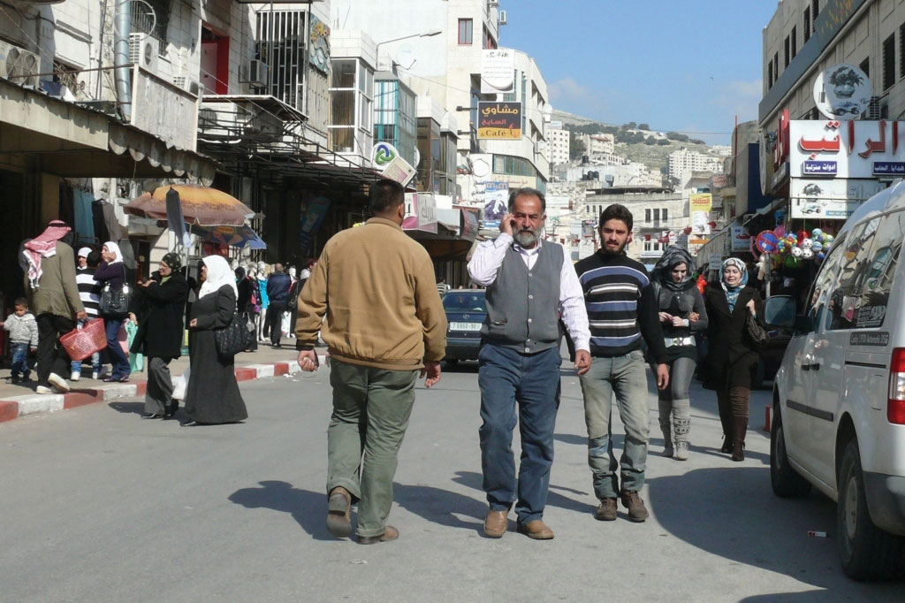Cell phones are ubiquitous in Nablus.
Source: Photo by R. Berglee.
In 2006, both Israel and the PLO held democratic elections for their leaders. In 2006, a candidate from the Hamas party won the election for the leadership of the PLO, which concerned many of the PLO’s external financial supporters. The Israeli government characterizes Hamas as a terrorist organization that supports the destruction of the State of Israel. Hamas has advocated for suicide bombers to blow themselves up on populated Jewish streets. The Jewish State of Israel has been fighting a low-level war against Palestinian resistance groups such as Hamas since 1948. In 2008, the leaders of the Fatah party, which are more prominent in the West Bank region, took matters to the PLO Central Council, which chose Mahmoud Abbas as president of the State of Palestine.
Figure 8.26 Security Wall between Israel and the West Bank
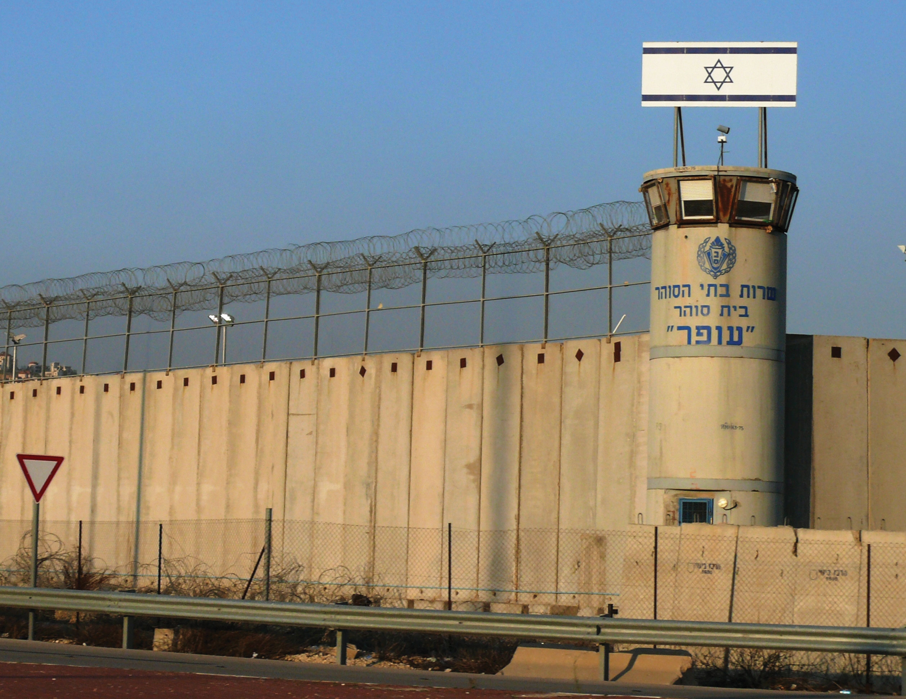Source: Photo by R. Berglee.
The problems between Israel and Palestinians are far from settled. The region has plenty of interconnected concerns. The biggest supporter of Israel, the United States, invaded Iraq in 2003, an invasion that raised the concern level of Islamic groups in the Middle East, including the Islamic leaders that control the government of Iran. Israel has nuclear weapons, and Iran has worked at developing nuclear weapons. US involvement in the region has heightened tensions between Iran and Israel. Oil revenues are driving the economies of most of the Arab countries that support the Palestinians. Oil is an important export of the region, with the United States as a major market. The difficulties between Israel and the Palestinians continue to fuel the conflict between Islamic fundamentalists and Islamic reformers. Some Islamic groups have accepted Israel’s status as a country and others have not. The Israel-Palestinian problem drives the geopolitics of the Middle East. The US war in Iraq has complicated the situation but has not superseded it. The situation in Palestine is predicted to continue long after the problems in Iraq have stabilized.
Figure 8.27 West Bank Settlements and Palestinian-Controlled Areas
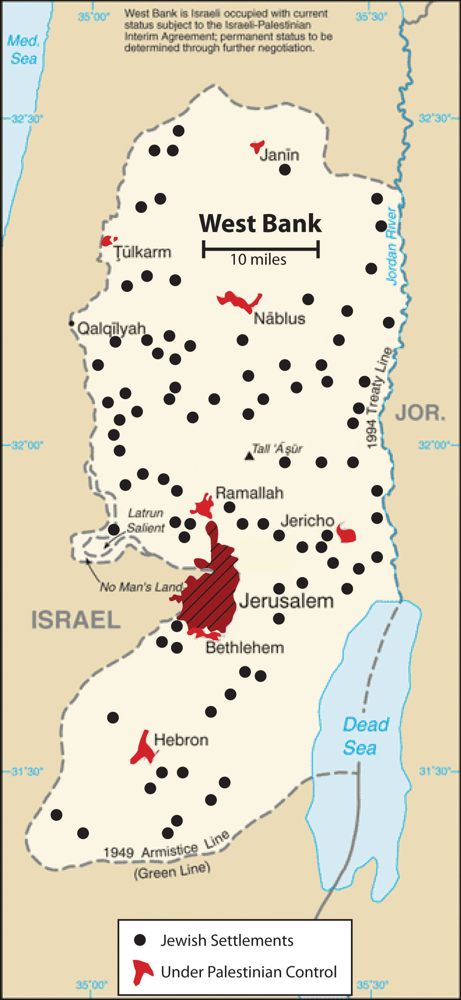Source: Updated from map courtesy of CIA World Factbook.
North of the Arabian Peninsula are three Arab states that surround Israel: Jordan, Syria, and Lebanon. Each country possesses its own unique physical and cultural geography. The country of Jordan was created through the British Mandate after World War I, when Britain defeated the Turks in Palestine. The area east of the Jordan River became the modern country of Jordan in 1946. From 1953 to 1999, during the most volatile period of the region, the country was ruled by a pragmatic leader, King Hussein, who was able to skillfully negotiate his way through the difficult relationship with Israel and yet keep his country stable. When Palestine was divided by the UN to create the State of Israel, the region of Jordan received more than a million Palestinian refugees from the West Bank and Israel. Refugees make up a large portion of the more than six million people who live in Jordan today; about a half million refugees from the US war in Iraq are included in that total.
Jordan is not large in physical area. Natural resources such as oil and water are not abundant here, and the country often has to rely on international aid to support its economy. Inflation, poverty, and unemployment are basic issues. The government of Jordan is a constitutional monarchy. King Hussein’s son ‘Abdullah II took power after the king’s death in 1999. Economic reforms were implemented by King ‘Abdullah II to improve the long-term outlook of the country and raise the standard of living for his citizens. The king allowed municipal elections to be conducted, which allowed for 20 percent of the positions to be dedicated to women candidates. Parliamentary elections were held by a democratic vote.
Figure 8.28 King ‘Abdullah II of Jordan Visits US President Barack Obama in the White House in 2011
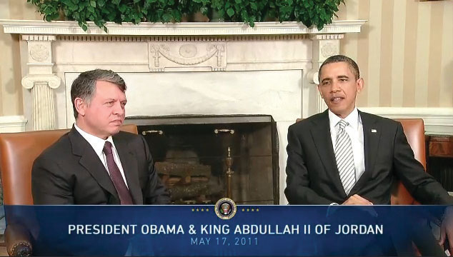Jordan has had good political relations with the United States. King ‘Abdullah II has worked to maintain a stable government in Jordan and maintain civil stability in spite of Jordan’s lack of economic opportunities.
Source: Photo courtesy of the White House.
Figure 8.29 Jordan
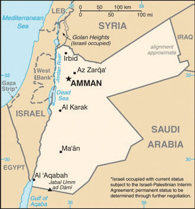Source: Map courtesy of CIA World Factbook.
Jordan has demonstrated how a country with few natural resources in a volatile region of the world can proceed down a progressive path despite difficult circumstances. Jordan has developed a positive trade relationship with Europe and the United States while at the same time working with its Arab neighbors to access oil and to maintain a civil state of affairs. Jordan is not without its challenges but has managed to confront each issue yet retain a sense of stability and nationalism.
The strategically located country of Syria is at the center of the Middle East’s geopolitical issues. Syria gained its independence from the French Mandate in 1946, the same year as Jordan. Syria has strived to work out and stabilize its political foundation. In a move to create greater Arab unity in the realm, Egypt and Syria joined forces and created the United Arab Republic in 1958. This geopolitical arrangement lasted until 1961, when the partnership was dissolved. Syria returned to its own republic. The Arab Socialist Baath Party gained strength, and in 1970 Hafiz al-Assad, of the AlawiteMinority religious group that is an offshoot from Shia Islam and has controlled Syria for decades. minority (an offshoot branch of Shia Islam making up about 10 percent of the Syrian population), took over leadership in a coup that stabilized the political scene. It was during this era that the Golan Heights was lost to Israel in the Arab-Israeli War of 1967. This strategic geographical location is a point of contention in the peace negotiations between Syria and Israel.
Hafiz al-Assad served as the leader of Syria for twenty-nine years without having been democratically elected to the office by the people. His son Bashar took the reins of leadership after Hafiz died in 2000. The Alawite sect held power in Syria through the Assad family under military control. Syria has been accused of using its military power to influence conditions in Lebanon, where it brokered a peace deal in its civil war (1975–1990). Syria has also been accused of supporting the anti-Israel groups headquartered in Lebanon.
Syria is located in an ancient land with a long history of empires and peoples. The region of Syria was once part of the cradle of civilization that sprung up in Mesopotamia. Damascus claims to have been continually inhabited longer than any other capital city on Earth. The largest city and the center of industrial activity is Aleppo, which lies in the north of Syria. Syria’s physical area is slightly larger than the US state of North Dakota. Overall, Syria’s climate is characterized as an arid type B climate; some regions receive more rain than others. The western region, because it borders the Mediterranean Sea, is an area that receives more rainfall. The additional rainfall translates into extensive agricultural production. The northeast area of Syria is also productive agriculturally through water resources provided where the Euphrates River cuts through the country. Oil and natural gas have been the country’s main export products. The petroleum reserves are being depleted, and few new fields are being developed. Eventually, the wealth generated by the sale of petroleum reserves, which are finite resources, is projected to diminish, even as the population continues to increase.
The Syrian government has exerted strict control over the economy. The country will face serious economic issues in the future. There is a high rate of unemployment. Because oil production has not been increasing, the government has been forced to take on additional national debt. The arid climate and the need to supplement agriculture production have placed additional pressure on precious fresh water supplies. The Euphrates River provides fresh water, but it originates in Turkey, where large dams restrict the flow. Water rights for the region are therefore an issue. One third of Syria’s population is under the age of fifteen, which indicates a rapid population growth pattern that will tax future resources at an increasing rate. In 2010, Syria had about twenty-two million people. The country holds political significance; its strategic location between Iraq and Israel makes it is a vital player in any solution for lasting peace in the Middle East.
Figure 8.30 Female Protesters in Douma, a Suburb of Damascus, in 2011
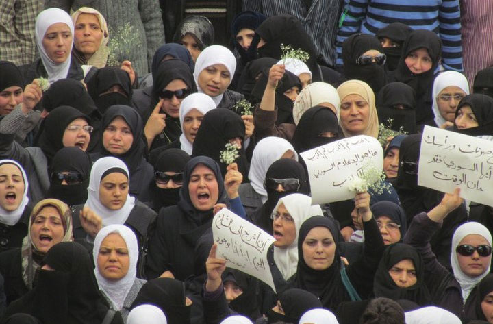Source: Photo courtesy of syriana2011, http://www.flickr.com/photos/syriana2011/5650171577.
Figure 8.31 Syria
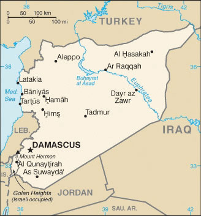Source: Map courtesy of CIA World Factbook.
Syria has experienced protests and demonstrations similar to those that swept through North Africa in the Arab Spring of 2011. Citizens expressed dissatisfaction with the government because of the lack of democratic reforms, high unemployment, and the loss of civil rights, which had been taken away when the government declared a state of emergency in 1963. Student protests escalated to massive citizen demonstrations that emerged in various Syrian cities in the spring of 2011. The government cracked down on protesters, killing some. After extensive demonstrations on March 15, the government arrested more than three thousand people. Hundreds have been killed in violent clashes between the people and government security forces.
The lack of democratic processes by President Bashar al-Assad’s government has continued to prompt protests and demonstrations in Syria. The US government eventually placed sanctions against Assad and a number of high-level Syrian officials. A new cabinet was installed in Syria, and the decades-old state of emergency was rescinded. Unrest and protests by the people continue, and the government responds by cracking down on them with harsher methods. Syria’s neighbors and various European nations have increased sanctions and denounced the Assad regime, which has increased the pressure on Syria.
The uprising in Syria that started as a part of the wave of the Arab Spring continues. The Arab Spring protests and demonstrations in Syria have often been compared to those in Libya. Both Syria and Libya have had long-time leaders that ruled for decades without democratic reforms or wide-spread personal freedoms for their citizens. The difference is that in Syria the Assad regime has held total control over a large military and comprehensive control over political and economic activities. This is unlike Libya under Muammar Gadhafi, whose modest military forces included hired mercenaries from other countries and the government had a fragmented or weak political structure. Speculation regarding changes in the government and the future of Syria is more difficult.
Phoenicians created an empire along the Mediterranean coast of present-day Lebanon four thousand years ago, and many armies fought over the strategically located region. After the demise of the Ottoman Empire, the area became a European protectorate under the French Mandate. Independence was granted by the French in 1943.
Lebanon is smaller than the US state of Connecticut with a population of about four million. The country’s high central mountain chain, the Lebanon Mountains, reaches as much as ten thousand feet in elevation. At these elevations, precipitation turns to snow and allows the operation of ski resorts. To the east of the central range is the fertile Bekaa Valley, which plays a vital role in the country’s agriculture. On the eastern side of the Bekaa Valley is another shorter mountain range that borders Syria.
Figure 8.32 Lebanon (left); Majority Religious Factions in 2006 (right)
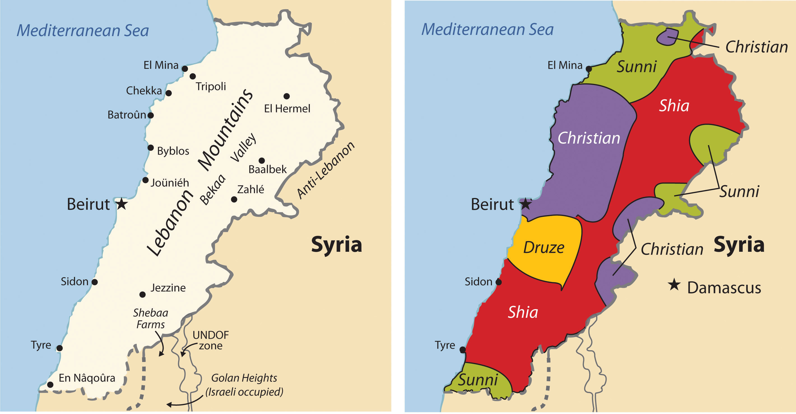Source: Maps courtesy of CIA World Factbook.
Following World War II, Beirut, the capital city of Lebanon, became known as the “Paris of the Middle East,” complete with Western-style night clubs and a jet-setting business class. In the past, of Lebanon was called the “Switzerland of the Middle East” because of its capabilities in banking and finance, which were supported by a relatively stable political climate. Unfortunately, stable and progressive conditions were not enough to keep the country from escalating into division and civil war in the 1970s.
In the latter half of the twentieth century, internal tensions were building between the many religious and cultural factions competing for power in Lebanon. By the early 1970s, the minority Christian government clashed with a majority Muslim population. Many factions entered the arena on both the Christian and Muslim sides. On the Christian side are Orthodox, Catholic, and Protestant factions. The Islamic side includes the Sunni, the Shia, and the DruzeMinority religious group that is semi-Islamic and incorporates Gnostic or neo-Platonic philosophies., a semi-Islamic offshoot group that incorporates Gnostic or neo-Platonic philosophies.
Lebanon was experiencing a full-scale civil war by 1975 that continued until 1990, when the Syrian military brokered a peace deal. By the time it ended, the bitter civil war had destroyed the infrastructure of the country. Only one-third of Beirut’s population remained. The former thriving city had been reduced to a collection of bullet-ridden empty buildings. It took more than a decade, but through the resiliency of the people, Beirut rebounded and continues to recover. A massive rebuilding program has resurrected the city of Beirut and stimulated the economy.
Still, conflicts linger, and discord between Israel and Syria has violent results. Israel has taken military action against anti-Israel factions within Lebanon on a number of occasions. In 1982, Israel attacked PLO strongholds, which were operating out of Lebanon in the Bekaa Valley and West Beirut. In 1993, Israel conducted air raids and military strikes against guerilla bases in Southern Lebanon. Anti-Israel groups such as HezbollahAnti-Israeli group based in Lebanon. operate out of Lebanon and receive aid from other Arab states, a source of contention that has prompted Israel to confront Hezbollah on Lebanon’s territory. As a result, Lebanon has become a battleground on which factions try to work out their differences. Syria’s continual intervention in Lebanon has sometimes been unappreciated; in 2004, massive demonstrations advocated for the removal of all Syrian troops. Syria withdrew its forces in 2005.
There is no dominant majority political party in Lebanon to coalesce power. Lebanon consequently developed a unique parliamentary democratic system to relieve some of the tension between the various cultural-political factions. In this system, a number of positions in government are reserved for specific religious/political parties. The deputy prime minister position, for example, is reserved for an Orthodox Christian; the prime minister is a Sunni Muslim; the speaker of the parliament is a Shia Muslim; and the president can only be a Maronite Catholic Christian.
Lebanon’s cultural and religious factions within its small state clash with political fervor and conviction, at times creating chaotic conditions that interrupt economic growth and discourage international investments. Add the dynamic cultural conditions to Lebanon’s attractive physical features—the beautiful Mediterranean coast, the attractive interior mountains, and the cosmopolitan city of Beirut—and it is easy to see why Lebanon is such a fascinating geographic study. Lebanon holds a unique location and position in the Middle East that will remain a focus of interest to the rest of the world.
Figure 8.33 Beirut, Lebanon
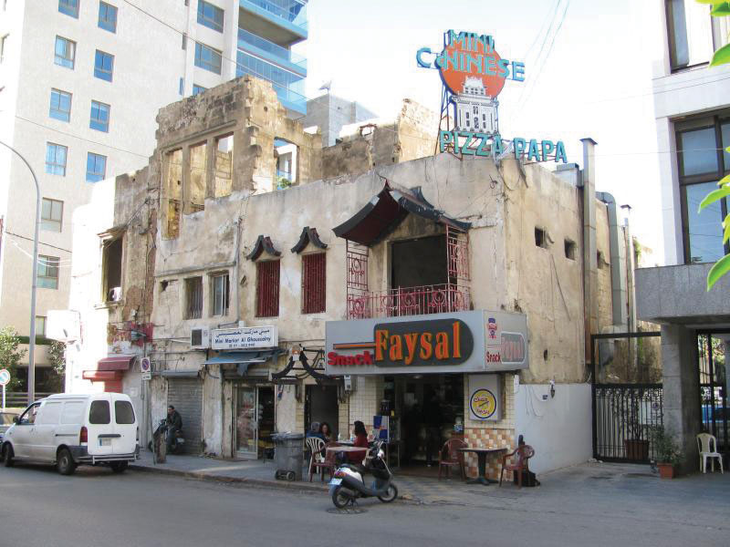Located in the middle of an upscale neighborhood in Beirut, this food shop is in a building that has not been fully repaired from damage resulting from the 1975 civil war. The restaurant offers diverse foods, including Chinese food and pizza.
Source: Photo courtesy of Steven Damron, http://www.flickr.com/photos/sadsnaps/4256203486/in/photostream.
Identify the following key places on a map: